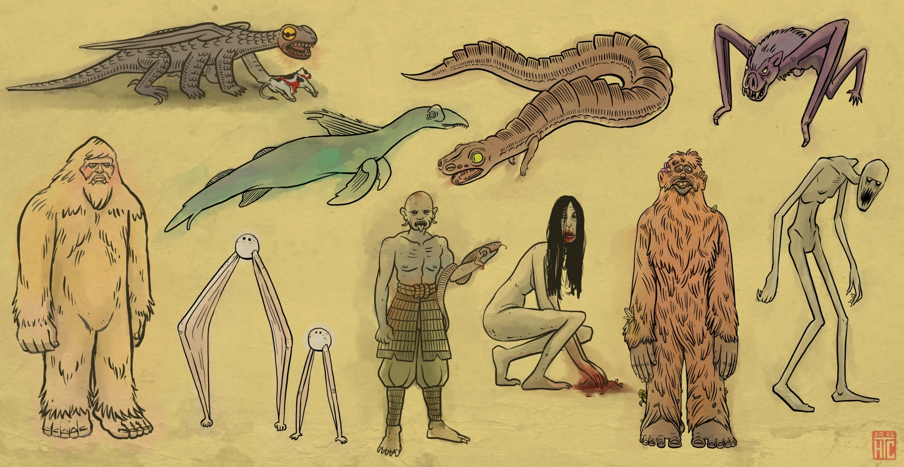

What is a Cryptid?
The term cryptid refers to an animal or creature whose existence is asserted through folklore, legend, and eyewitness accounts (otherwise known as “sightings”); organisms whose existence is suggested by anecdotal evidence or cultural tradition, rather than by scientific proof or verification by traditional biological sciences.
Studied within the field of cryptozoology [from the Greek words: kryptos (hidden), zoion (animal), and logos (study)], these entities persist in public consciousness, despite the lack of direct observation or physical specimens. Against all odds, they continue to run rampant in the imaginations of animal lovers, storytellers, nature enthusiasts, and the magnificently inquisitive among us.